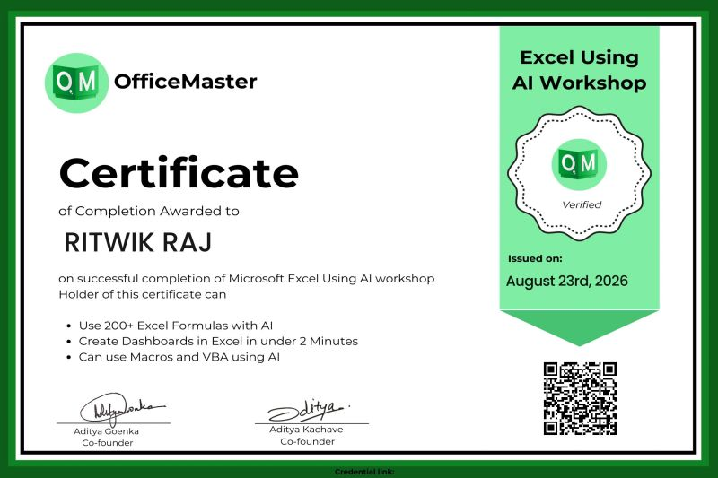
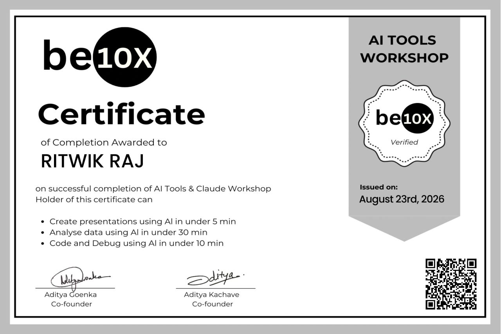
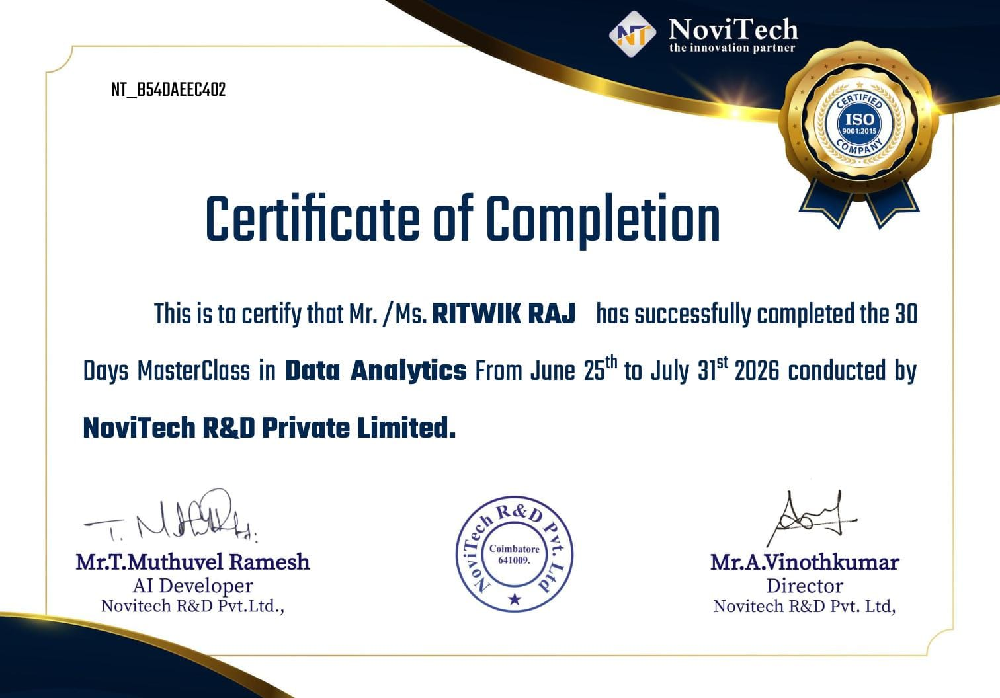
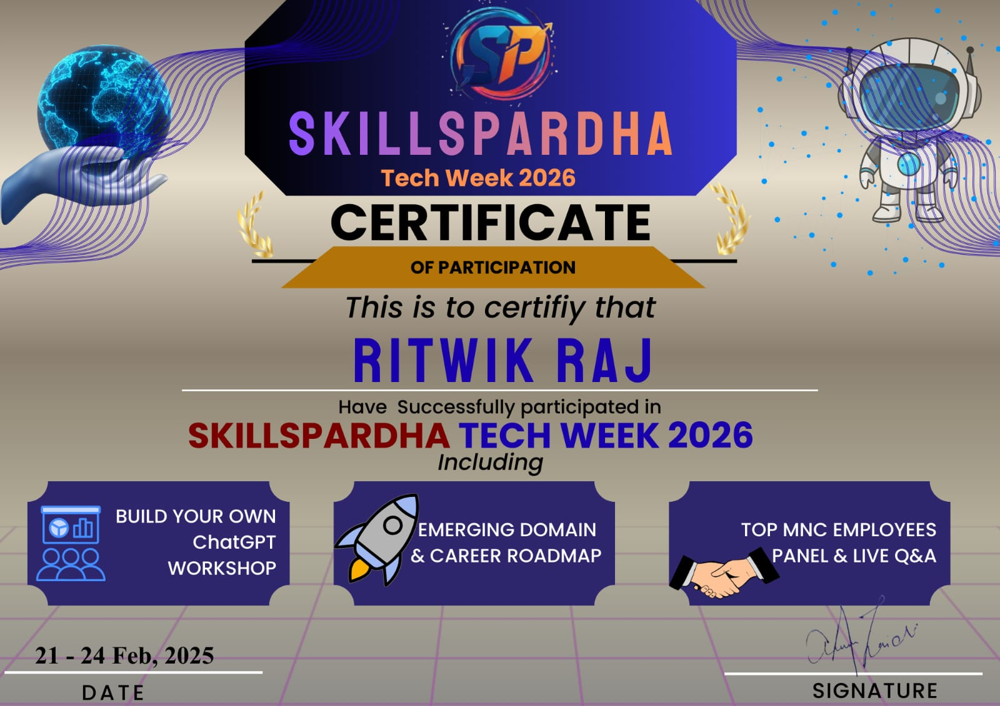
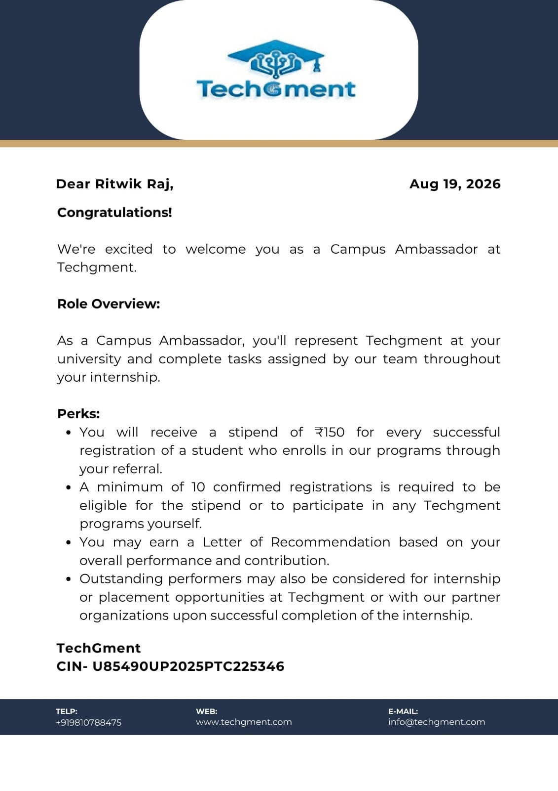
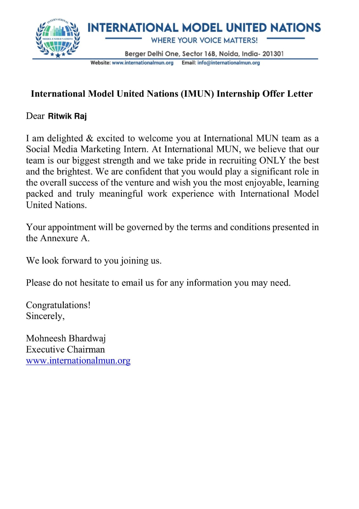

01
Hand Gesture Shooting Game
A computer-vision based game concept controlled using hand gestures, combining interaction with programming.
GitHub ↗DATA ANALYTICS • BCA STUDENT
A BCA student interested in programming, data analytics, problem solving and practical technology projects.
01 / ABOUT
I’m currently building my foundation in Data Analytics alongside my BCA studies. My focus is on learning how to work with data using Python, Excel and SQL, while improving my ability to analyze information, communicate insights and build practical projects.
My current learning journey includes Python, C, Java, web technologies, data structures and computer fundamentals.
03 / SKILLS
The tools and foundations I’m building toward a Data Analytics career.
03 / PROJECTS
A computer-vision based game concept controlled using hand gestures, combining interaction with programming.
GitHub ↗A collection of beginner-friendly programs covering prime numbers, Fibonacci, palindrome, Armstrong numbers and more.
GitHub ↗Practice projects using formulas, tables, charts and basic data analysis for academic and practical use.
Details ↗CAREER DIRECTION
A focused path toward becoming a strong Data Analytics professional.
Build strong foundations in Excel, Python, SQL and statistics.
Work with real datasets, clean information and identify patterns.
Create clear dashboards and visual stories that communicate insights.
Turn what I learn into practical projects that demonstrate my progress.
CUENTLY LEARNING
My roadmap is focused on turning programming fundamentals into stronger data-analysis skills.
Improving formulas, dashboards and practical analysis workflows.
Strengthening queries, filtering, joins and database fundamentals.
Preparing to move from programming fundamentals into data workflows.
Planned next steps as I continue the Data Analytics journey.
04 / ACHIEVEMENTS
Click any card to open the certificate, read the details and view the original document.

Excel + AI workshop
OfficeMaster • Issued Aug 23, 2026
AI tools, data analysis & coding
be10x • Issued Aug 23, 2026
30 Days MasterClass in Data Analytics
NoviTech R&D Private Limited • 2026
Technology event & learning sessions
ChatGPT Workshop • Career Roadmap • MNC Panel
2 pagesCampus representation, outreach & digital marketing
TechGment Pvt. Ltd. • Appointment dated Aug 19, 2026
+ 2 pagesInternational Model United Nations (IMUN)
Offer Letter + Annexure + Benefits05 / EDUCATION
Jharkhand Rai University • 2025–2028
Bishnugarh Interscience College • JAC Board • 2025
SRSSR High School, Suriya • JAC Board • 2023
80% Marks
06 / CONTACT
I'm open to learning opportunities, student projects, collaborations and meaningful conversations around technology.